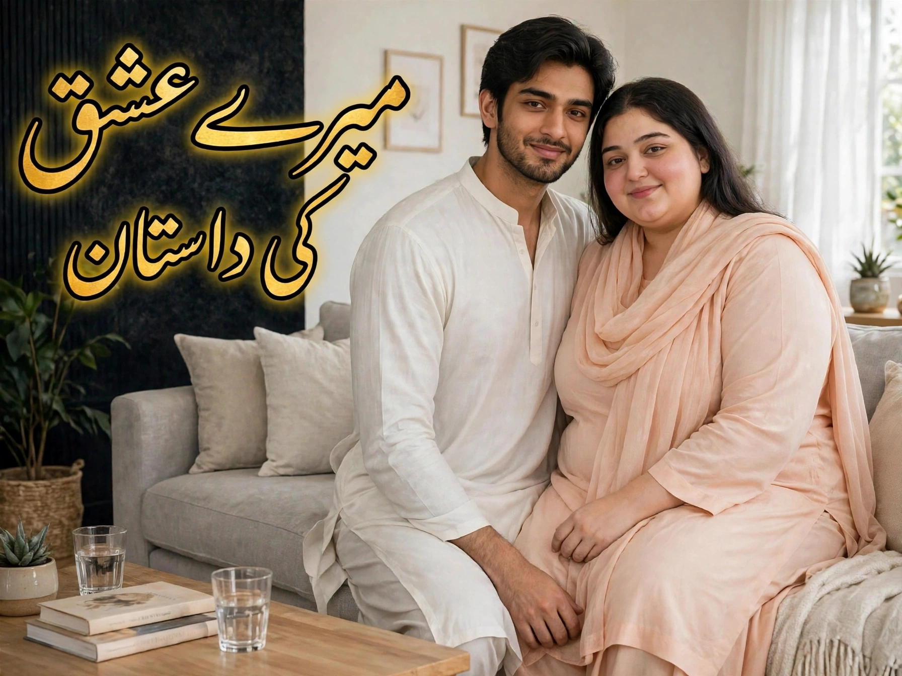
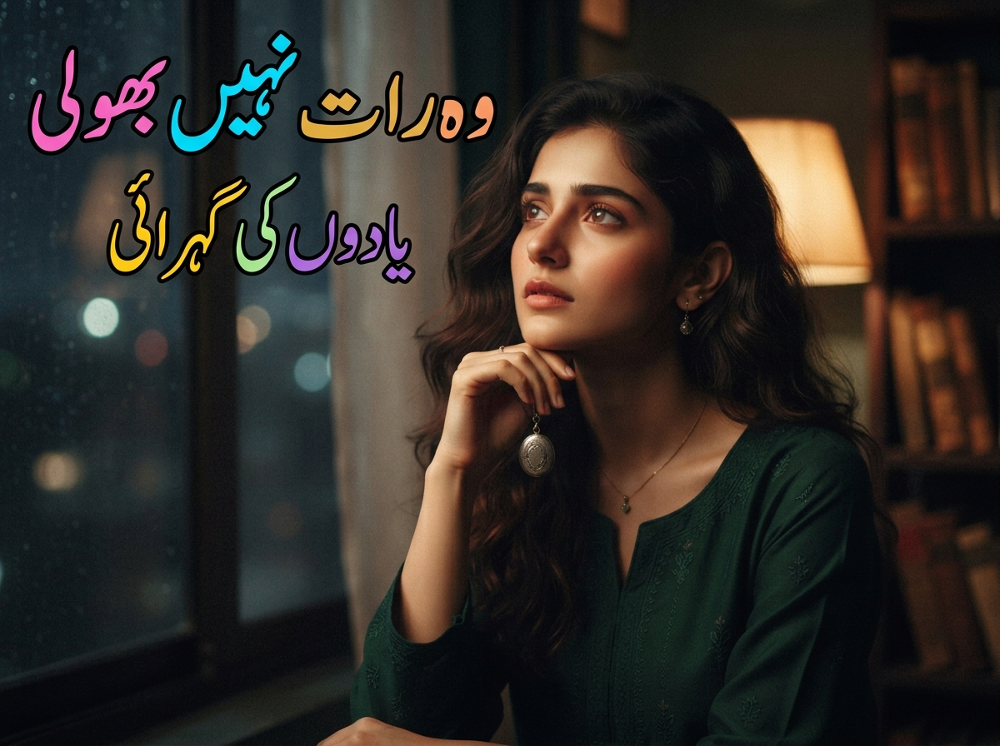
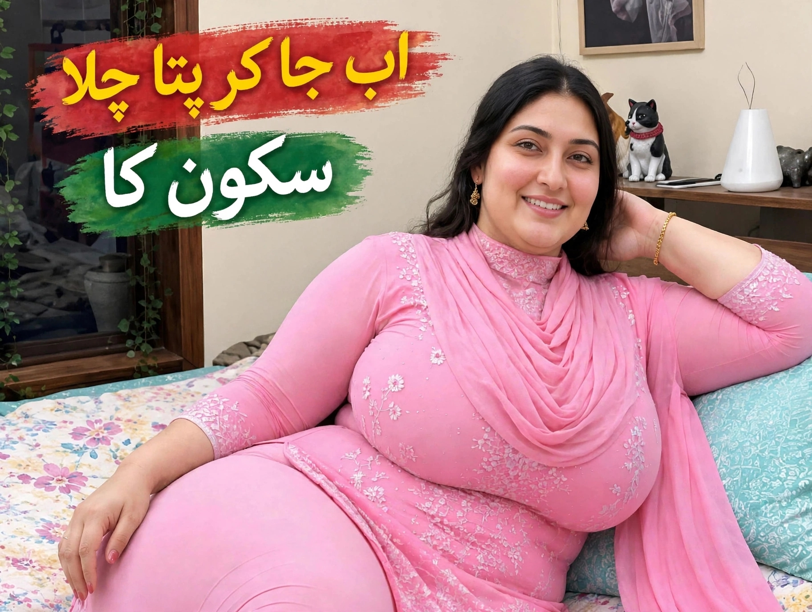
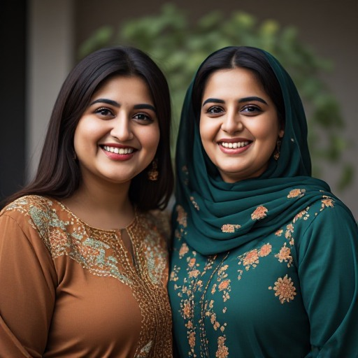
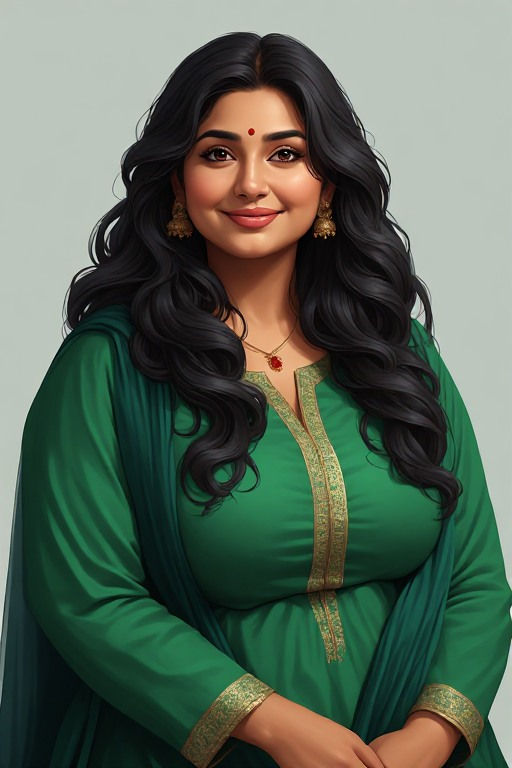
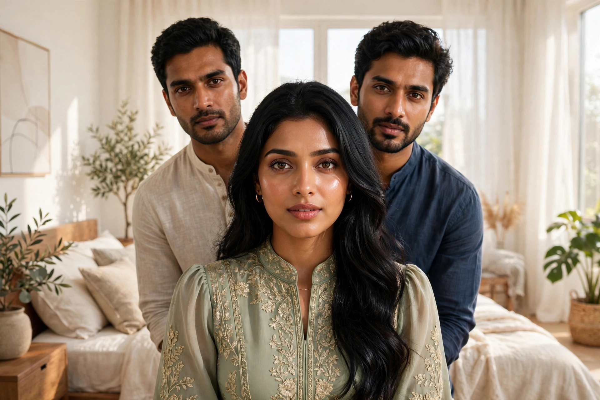

.jpeg)
میری سہیلی کا کیوٹ بیٹا
ھیلو دوستو کیسے ہیں آپ امید کرتی ھوں آپ اچھے ھونگے میرا نام سویرا ھے اور میں آپ دوستو سے اپنے ایک راز کی کہانی شیئر کرنا چاہتی ھوں...
تمام ناولز اور کہانیاں چوری سے محفوظ ہیں

ھیلو دوستو میرا نام ماجد ھے آج میں آپ دوستوں کو میرے عشق کی داستان سُنانے جا رہا ھوں جسے سن کر آپ کو بہت زیادہ مزہ آنے والا ھے دوستو میری یہ سچے عشق کی داستان ھے...
مکمل کہانی پڑھیں ←
ھیلو دوستو میرا نام سُمن ھے اس وقت میں آپ دوستو سے اپنا وہ راز شیئر کرنا چاہتی ھوں جو آج تک میں نے کسی سے شیئر نہیں کیا اور وہ راز میں آج تک نہیں بھلا پائی ھوں
مکمل کہانی پڑھیں 👈
ہیلو دوستو! میرا نام نندنی ہے۔ ہمارے گھر میں ممی، پاپا، دو بہنیں، دو بھائی اور میں شامل ہوں۔ میں اپنے بہن بھائیوں میں سب سے بڑی ہوں۔ میری خوبصورتی کے بارے میں لوگ اکثر باتیں کرتے ہیں؛ میرا رنگ گورا چٹا ہے اور میری شخصیت میں ایک خاص کشش ہے۔ لیکن حقیقت یہ ہے کہ ہم ایک غریب گھرانے سے تعلق رکھتے ہیں۔....
ہیلو دوستو، میرا نام نشا ہے۔ ہم گھر میں چار افراد ہیں: ممی، پاپا، میں اور میرا چھوٹا بھائی۔ میری زندگی کا ایک ایسا رخ بھی رہا ہے جس نے مجھے اندر سے توڑ کر رکھ دیا تھا۔ میری شادی ہوئی تھی، لیکن افسوس کہ وہ صرف تین سال ہی چل سکی اور پھر مجھے طلاق کا سامنا کرنا پڑا۔
پوری کہانی پڑھیںہیلو دوستو میرا نام پلوی ھے میں گاؤں کی رہنے والی ھوں میرے پاپا گاؤں میں سب سے امیر ہیں ہماری بہت ساری زمینیں ہیں میرا ایک بھائی مجھ سے بڑا ھے ہمارے ساتھ میں تین گھر ہیں ایک گھر میں ھم سب رہتے ہیں اور دو گھر ہمیشہ سجے رہتے ہیں ویسے میرے پاپا بہت دیالو ہیں...
پوری کہانی پڑھیںھیلو دوستو آج میں اپنی زندگی کی سچی کہانی شیئر کرنا چاہتی ھوں جو زندگی میں میرے ساتھ ھوا اور جو میں کیا تو دوستو میں اپنی کہانی شروع کرتی ھوں ہمارے گھر میں ممی کا راج تھا میرے پاپا بھی ممی سے ڈرتے تھے مجال ھے کے پاپا میری ممی کے فیصلے کے خلاف جاتے یہ سچ ھے کہ پاپا ھی کماتے تھے مگر ممی گھر کی ہٹلر تھی میری ممی نے میری شادی..............
پوری کہانی پڑھیں
میں جو آپ دوستوں سے اپنی کہانی سُنانے جا رہی ہوں وہ صرف ایک کہانی نہیں ہے بلکہ میری خود کی آپ بیتی ہے اس میں ہر ایک لفظ میں وہ سچائی ہے جو زندگی میں میرے ساتھ پیش آیا......
پوری کہانی پڑھیں
ہیلو دوستو میرا نام ارچنا ہے میں بہت پیاری ہوں میرا گورا رنگ ہے میرے پنک ہونٹ بہت پیارے ہیں اور میرے گال گورے ہیں اور میں تھوڑی سی موٹی ہوں میرا فگر ایک دم فٹنس ہے......
پوری کہانی پڑھیںہیلو دوستو میرا نام شنایا ھے آج میں آپ دوستو سے اپنی ایک سچی کہانی شیئر کرنے کیلئے آئی ھوں تو دوستو زندگی میں کچھ ایسے واقعات ھو جاتے ہیں جس سے انسان خود پر قابو نہیں پا سکتا...
ہیلو دوستو میرا نام فائزہ ہے میں اپنی زندگی کی سچی کہانی شیئر کرنا چاہتی ہوں آپ دوستوں سے۔ میں اپنی کہانی شروع کرتی ہوں، میری شادی ہم سے امیر خاندان میں ہوئی، میرا شوہر بزنس کرتا ہے اور بڑے زور شور سے میری شادی ہوئی۔ دنیا کے بڑے بڑے لوگوں نے میری شادی میں شرکت کی اور میں اپنے سسرال آگئی۔ میرے سسر کے دو بیٹے ہیں، ایک میرا جیٹھ دوسرا میرا شوہر ہے، شوہر بزنس کیلئے زیادہ تر باہر...
میری شادی اپنے کزن سے ہوئی تھی، وہ انسان جس سے میں نے دل و جان سے محبت کی تھی۔ لیکن تقدیر کا کھیل دیکھیے کہ اس نے مجھے زندگی کے آدھے سفر میں اکیلا چھوڑ دیا۔ ایک بیوہ عورت کی تنہائی کیا ہوتی ہے، اور جب جذباتی طوفان اندر ہی اندر ابل رہے ہوں تو خود کو کیسے سنبھالا جائے؟ یہ وہ جنگ تھی جو میں روز رات کو خود سے لڑتی تھی، اور جس کا گواہ میرے کمرے کے در و دیوار کے علاوہ کوئی نہ تھا.........
ایک دن میں اپنے کلینک میں تھی اور مریضوں کی فائلیں دیکھ رہی تھی، اتنے میں کلینک کا ڈور کھلا اور ایک خوبصورت نوجوان لڑکی اندر داخل ہوئی۔۔۔۔۔۔
ھیلو دوستو کیسے ہیں آپ امید کرتی ھوں آپ اچھے ھونگے میرا نام سویرا ھے اور میں آپ دوستو سے اپنے ایک راز کی کہانی شیئر کرنا چاہتی ھوں...

ہیلو دوستو میرا نام زبیر ہے آج میں آپ کو اپنی سچی آپ بیتی سنانے جا رہا ہوں...
پوری کہانی پڑھیں.jpeg)
کہانیوں کے پیارے قارئین، خوش آمدید! آج میں آپ کے سامنے ایک ایسی سچی آپ بیتی پیش کرنے جا رہی ہوں جس نے رشتوں کے تقدس اور خاندانی روایات کے درمیان میرے جذبات کا ایک انوکھا امتحان لیا...
مکمل کہانی پڑھیں ←میرے پاپا کے گزرنے کے ایک مہینہ بعد ایک شام ممی اپنے ساتھ ایک انکل کو لائی ممی انکل کو اپنے روم لے کر چلی گئی...
ایک دن پاپا گھر آئے ممی خوش تھی... ہیلو دوستو کیسے ہیں آپ میں آپ دوستو سے اپنی سچی کہانی شیئر کرنا چاہتی ہوں...
اس ویب سائٹ پر موجود کہانیاں صرف بالغان (Adults) کے لیے ہیں۔ کیا آپ کی عمر 18 سال یا اس سے زیادہ ہے؟